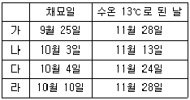
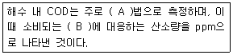
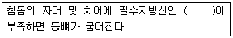

수산양식기사 (2016-03-06 기출문제)
1과목: 어류양식학
1. 잉어 양식에 있어서 사용 수량 당 생산량이 가장 많은 양식 방법은?
- 지수 양식
- 방류재포양식
- 유수식 양식
- 순환여과식 양식
(정답률: 79%)

2. 조피볼락 종묘 생산 시 부화된 아르테미아를 영양강화 한 후에 공급하는 것은 주로 어떤 영양소를 보충하기 위해서인가?
- 비타민 A
- 포화지방산
- 필수아미노산
- DHA
(정답률: 72%)
3. 어류양식 과정 중 일반적으로 단백질이 가장 많이 요구되는 시기는?
- 치어기
- 성어기
- 산란기
- 부화기
(정답률: 90%)
4. 틸라피아의 전 수컷 생산에 사용되는 약품은?
- Ethynyl-testosterone
- Giemsa R-66
- Human chorionic gonadtropin
- Estradiol-17β
(정답률: 92%)
5. 영양소인 단백질에 함유된 질소(N) 성분의 평균값은?
- 약 11%
- 약 16%
- 약 21%
- 약 26%
(정답률: 87%)
6. 어류 유생 사육에 필요한 먹이생물인 로티퍼(rotifer)의 배양과 먹이공급 방법에 대한 내용 중 적합하지 않은 것은?
- 로티퍼 1마리가 먹는 클로렐라 양은 하루에 약 20~30만 개체이다.
- 빵효모로 로티퍼를 배양할 경우 채취한 즉시 유생의 먹이로 사용한다.
- L-type 로티퍼는 수온을 20~25℃로 배양한다.
- S-type 로티퍼는 수온을 25~30℃로 배양한다.
(정답률: 90%)
7. 넙치 양성 시 적수온 범위인 15~26℃에서 수조의 환수율이 하루에 10~12회전일 때 m2당 양성밀도로 가장 적합한 것은?
- 1~5㎏
- 5~15㎏
- 20~30㎏
- 30~40㎏
(정답률: 81%)
8. 1m2당 적절한 무지개송어 치어의 방양밀도는? (단, 수온 15℃, 개체 당 무게는 4g 내외임)
- 300~400마리
- 400~600마리
- 600~900마리
- 900~1300마리
(정답률: 61%)
9. 먹이생물로 주로 공급되는 아르테미아(artemia)의 발달 단계는?
- 휴면난(resting egg)
- 미시스(mysis)
- 조에아(zoea)
- 노플리우스(nauplius)
(정답률: 75%)
10. 생산성 향상을 위해 전 수컷 집단 생산이 필요한 어종은?
- 미꾸라지
- 무지개송어
- 넙치
- 틸라피아
(정답률: 91%)
11. 다음 중 넙치 자어를 사육하기에 가장 적절한 수온 범위는?
- 5~10℃
- 10~15℃
- 15~20℃
- 20~25℃
(정답률: 82%)
12. 무지개송어 양식장 용수의 이상적인 용존산소량은?
- 2~3㎎/ℓ
- 4~5㎎/ℓ
- 6~7㎎/ℓ
- 10~11㎎/ℓ
(정답률: 73%)
13. 뱀장어(참장어)에 대한 설명으로 틀린 것은?
- Leptocephalus를 잡아서 기른다.
- 어미 한 마리는 700~1300만 개 전후의 알을 낳는다.
- 실뱀장어는 1마리의 무게가 0.15g 정도이다.
- 수온이 27~28℃ 정도로 높으면 잘 자란다.
(정답률: 84%)
14. 조피볼락에 대한 설명 중 틀린 것은?
- 12~2월에 교미한다.
- 3~4월에 알이 수정된다.
- 체내수정을 한다.
- 출산수온은 22~26℃이다.
(정답률: 76%)
15. 금붕어의 선별 기준으로 가장 거리가 먼 것은?
- 몸길이와 체고
- 각 지느러미의 모양
- 비늘의 투명성과 불투명성
- 눈의 크기
(정답률: 89%)
16. 자주복을 양성하고자 할 때 m3당 치어의 방양밀도는?
- 9~14마리
- 6~9마리
- 4~6마리
- 2~4마리
(정답률: 53%)
17. 참돔 자·치어 사육에 대한 설명이 틀린 것은?
- 수정란은 수온 20℃ 전후에서 약 45시간 만에 부화한다.
- 알의 침하 방지를 위해 해수의 비중을 알의 비중보다 낮게 한다.
- 갓 부화된 자어의 크기는 대부분 2.0~2.3㎜이다.
- 부화 후 30~40일을 전후하여 공식 방지를 위해 치어의 선별과 먹이 공급시기 등을 조절한다.
(정답률: 78%)
18. 체중이 0.2~2g 사이의 뱀장어 명칭은?
- 실뱀장어
- 검둥뱀장어
- 새끼뱀장어
- 렙토세팔루스
(정답률: 75%)
19. 양식업의 가장 중요한 목적은?
- 미끼용 어류 또는 기타 동물의 생산
- 유기 폐기물의 재생
- 인류의 식량 생산
- 산업용 재료 또는 원료 생산
(정답률: 92%)
20. 200㎏의 넙치에게 900㎏의 사료를 공급하여 700㎏으로 성장시켰을 경우 사료 계수는?
- 1.6
- 1.7
- 1.8
- 1.9
(정답률: 88%)
2과목: 무척추동물양식학
21. 키조개의 산란용 모패를 보호하기 위한 금어기는?
- 1~2월
- 4~5월
- 7~8월
- 10~11월
(정답률: 59%)
22. 가리비 양성장 선정에 있어서 지표종으로만 짝지어진 것은?
- 갯지렁이 - 염통성게 - 미더덕
- 사미류(거미불가사리류) - 보라성게 - 따개비류
- 미더덕 - 붕넙치류 - 별불가사리
- 연닙성게 - 갯지렁이 - 둑중개류
(정답률: 85%)
23. 참담치의 서식장으로 적합하지 않은 곳은?
- 해수의 비중이 높은 외양성 암초
- 간조선에서부터 수심 10m 정도 되는 곳
- 조류가 빠른 수역의 단단한 고형물이 있는 곳
- 조류의 소통이 느리고 파도가 적은 내만
(정답률: 77%)
24. 멍게(우렁쉥이)와 관련된 내용이 아닌 것은?
- 물렁증
- 자웅이체
- 척색
- 신티올(Cynthiol)
(정답률: 86%)
25. 문어에 대한 설명 중 맞는 것은?
- 10개의 팔을 가진다.
- 암수 모두 생식팔(교접완)을 가진다.
- 산란수온은 15~20℃로 낮은 편이다.
- 보호색 기능을 가진다.
(정답률: 79%)
26. 적조(Red tides 또는 Harmful algal blooms)에 대한 가장 근본적인 대책은?
- 양식장을 옮기거나, 양식 대상종을 피난시킨다.
- 화학약품 등을 사용하여 적조생물이 발생하기 시작하는 초기에 제거한다.
- 해저의 오염된 개흙을 미리 제거해 준다.
- 질소나 인 등이 수역 내에 유입되는 양을 줄인다.
(정답률: 81%)
27. 패류 유생의 먹이로서 이용될 수 없는 종은?
- 클로렐라(Chlorella)
- 나비쿨라(Navicula)
- 케토세로스(Chaetoceros)
- 아르테미아(Artemia)
(정답률: 76%)
28. 귀매달기식 양성법으로 양성이 가능한 종은?
- 전복
- 키조개
- 진주조개
- 우렁쉥이
(정답률: 74%)
29. 바지락 서식처로 적합하지 않은 곳은?
- 태풍, 홍수 등에 의한 지반변동이 없는 곳
- 간출시간 2~3시간 정도 되는 곳부터 수심 3~4m 사이인 곳
- 지반이 안정되고 해수유통이 좋고 환원층이 발달한 곳
- 먹이 생물이 많은 곳
(정답률: 68%)
30. 단련종굴의 생산과정을 4단계로 나눌 때 3단계에 해당하는 것은?
- 채묘예보
- 해적구제
- 단련
- 채묘
(정답률: 84%)
31. 전복의 모패 선정관리에 대한 내용 중 틀린 것은?
- 인공 종묘생산에서는 까막전복이나 참전복이 유리하다.
- 참전복은 가온해수사육으로 5~6월에 조기 산란시킨다.
- 참전복의 채란에 적합한 적산수온은 3500℃ 이상이다.
- 산란유발은 간출과 자외선조사해수 자극을 병행하는 것이 좋다.
(정답률: 78%)
32. 고막의 주 서식지에 관한 내용으로 올바른 것은?
- 조하대~30m
- 조하대~50m
- 간조 시 노출되는 조간대
- 조간대~조하대 10m
(정답률: 80%)
33. 양식생물의 식성에 따른 주요 먹이의 종류가 틀린 것은?
- 멍게(우렁쉥이)류 : 식물플랑크톤, 연체동물 유생
- 고막류 : 유기물 찌꺼기, 소형 동·식물플랑크톤
- 전복류 : 부착규조류, 대형해조류
- 해삼류 : 소형 새우나 어류
(정답률: 88%)
34. 400g 크기인 문어 종묘를 방양 후 60일간 양성하여 50㎏/m3을 수확하였다면, 방양 당시의 밀도(㎏/m3)는? (단, 일간 성장률은 0.04, 생존율은 70%)
- 약 10
- 약 20
- 약 30
- 약 40
(정답률: 67%)
35. 분홍성게의 주산란기는?
- 1월부터 3월 사이
- 5월부터 7월 사이
- 8월 상순부터 9월 하순 사이
- 10월 하순부터 11월 상순 사이
(정답률: 66%)
36. 다음 중 방양 효과가 가장 큰 참가리비 종묘의 각장은?
- 3.0㎝
- 2.0㎝
- 1.0㎝
- 0.5㎝
(정답률: 68%)
37. 클로렐라(Chlorella)는 어느 분류군에 속하는 먹이생물인가?
- 녹조류
- 갈조류
- 남조류
- 홍조류
(정답률: 86%)
38. 기초수온이 7.6℃인 참전복의 실용적인 채란을 위해서는 20℃에서 며칠 이상 사육해야 하는가?
- 55일
- 75일
- 95일
- 1⑤일
(정답률: 62%)
39. 서식지 저질의 특성이 다른 양식생물은?
- 대합
- 바지락
- 개량조개
- 왕우럭
(정답률: 65%)
40. 보리새우의 종묘 생산 시 볼 수 있는 불완전 산란이 가장 많은 시기는?
- 5월 하순
- 6월 하순
- 7월 하순
- 8월 하순
(정답률: 53%)
3과목: 해조류양식학
41. 톳의 정자와 난자가 형성되는 곳은?
- 자낭반
- 포자엽
- 생식기집
- 엽체 전제
(정답률: 72%)
42. 미역 포자엽을 음건(그늘말리기)한 후에 포자를 방출시키는 주 이유는?
- 자극에 의해 단속적으로 방출시키기 위해
- 유주자의 착생율을 좋게 하기 위해
- 축적된 유주자를 단시간에 대량 방출시키기 위해
- 유주자의 운동성을 높이기 위해
(정답률: 75%)
43. 3월 중순~4월의 사상체 영양 생장기의 관리조건으로서 좋지 않은 것은?
- 조도 2,000~3,000㏓ (수하식)
- 조도 1,000~2,000㏓ (평면식)
- 수온 16~24℃
- 비중 1.020 이하
(정답률: 64%)
44. 다시마의 형태학적 특징에 대한 설명으로 틀린 것은?
- 엽체의 내부 조직은 표층, 피층, 속으로 구분된다.
- 엽체의 비대 생장은 형성 표피에서 일어난다.
- 엽면에는 미역과 같이 털집이 산재한다.
- 점액 강도는 피층세포에서 나타난다.
(정답률: 86%)
45. 풀가사리의 수직분포가 좁은 범위에 한정된 이유와 가장 거리가 먼 것은?
- 상층의 과소한 노출
- 하층에서의 광선 부족
- 하층에서의 타 해조와의 경합
- 파도에 대한 적응력 약화
(정답률: 74%)
46. 다음 김 부류식(뜬흘림발)시설 중 내파성이 가장 높은 것은?
- 사다리식
- 강관식
- 연구조식
- 뒤집기식
(정답률: 73%)
47. 우리나라 동·서·남해안의 천연미역 채취시기를 결정하는 가장 중요한 요인은?
- 영양염
- 염분
- 조류
- 수온
(정답률: 80%)
48. 청각의 채묘 시 대상 포자는?
- 과포자
- 접합자
- 유주자
- 수정란
(정답률: 73%)
49. 곰피의 종묘생산에서 채묘하기 위하여 성숙된 모조를 준비하기에 적당한 시기는?
- 4~5월경
- 7~8월경
- 10~11월경
- 1~2월경
(정답률: 55%)
50. 2년생 다시마를 저수온기에 최대한 활용하여 단기간에 생장시키는 양식방법은?
- 2년양식
- 촉성양식
- 억제배양양식
- 억제양식
(정답률: 88%)
51. 다시마의 상품가치가 되는 주된 기준은?
- 비대도
- 엽체 폭
- 엽장
- 엽목
(정답률: 77%)
52. 다음 중 억제 배양하는 다시마의 종묘를 월하시키는데 가장 알맞은 조도는?
- 800㏓
- 1000㏓
- 1200㏓
- 1400㏓
(정답률: 56%)
53. 우뭇가사리가 번식할 수 있는 적지가 아닌 것은?
- 연 평균 수온 10~20℃
- 비중 1.015 이상
- 하천수가 유입되는 장소
- 자연 암반이 발달된 장소
(정답률: 75%)
54. 인공해수로 김을 배양할 때 미량 금속이온의 흡수를 촉진시킬 목적으로 사용하는 것은?
- 비타민 B12
- 글루탐산염
- 황화나트륨
- EDTA
(정답률: 81%)
55. 미역 종묘 배양에서 초기 관리로 잘못된 것은?
- 수온은 23℃를 초과하지 않도록 한다.
- 수온상승과 더불어 조도를 차차 높힌다.
- 조도는 처음은 5000~6000㏓로 한다.
- 1개월에 1, 2회 채묘틀의 상하를 바꾼다.
(정답률: 57%)
56. 김 양식 시의 각포자 방출억제법이 아닌 것은?
- 고비중 처리
- 단일 처리
- 100% 습도처리
- 암흑 처리
(정답률: 77%)
57. 인공 채묘된 김발을 이식할 때 운반도중 건조의 피해를 예방하기 위하여 임시시설을 하는데 그 임시시설의 적정기간은?
- 1~2일
- 3~7일
- 1~2주
- 3주 이상
(정답률: 54%)
58. 다음 표는 김의 채묘 일자와 수온이 13℃로 된 날을 기록한 것이다. 가장 흉작이 예상되는 것은?

- 가
- 나
- 다
- 라
(정답률: 78%)
59. 양식 김에 대한 설명이 맞는 것은?
- 둥근돌김은 엽체의 가장자리에 거치가 있다.
- 잇바디돌김은 웅성이주이고 만생종이다.
- 방사무늬돌김은 자웅이주이고 염성이 약하다.
- 긴잎돌김은 자웅동주이고 만생종이다.
(정답률: 50%)
60. 김 생활사 중 핵상에 대한 내용이 옳은 것은?
- 과포자는 단상이다.
- 배우체는 복상이다.
- 사상체는 단상이다.
- 각포자는 단상이다.
(정답률: 73%)
4과목: 양식장환경
61. 생물학적 여과를 시작하면 비교적 초기과정에서 아질산염이 일시적으로 많이 나타나는 이유는?
- 처음에 어류가 아질산을 많이 내기 때문에
- 질산세균은 번식하기 힘든 세균이기 때문에
- ㏗의 영향 때문에
- Nitrosomonas가 Nitrobacter보다 먼저 번식하기 때문에
(정답률: 81%)
62. 해수의 염소량을 측정해서 염분량으로 환산하는 식으로 옳은 것은?
- S = 1.8⑤Cl
- S = 1.80655Cl
- S = 0.03+1.80655Cl
- S = 0.30+1.8⑤Cl
(정답률: 69%)
63. 옆 물길이 필요한 양어장은?
- 저수지 양어
- 댐호 양어
- 순환여과식 양어
- 가두리 양어
(정답률: 77%)
64. 다음 중 사육 수조에서 고형 오물의 제거 시 가장 영향을 주는 주요 요인은?
- 수조 내 질소화합물의 비율
- 수용된 물고기의 성별
- 사육 수조의 크기
- 사육수의 수온
(정답률: 75%)
65. 일반적으로 산소가 가장 많이 녹아있는 곳에 사는 어류는?
- 온수 지수 환경에서 사는 어류
- 온수 유수 환경에서 사는 어류
- 냉수 유수 환경에서 사는 어류
- 냉수 지수 환경에서 사는 어류
(정답률: 77%)
66. 적조에 관한 설명으로 가장 적합한 것은?
- 내만의 연안에서만 발생한다.
- 강우와 직접적인 관계가 반드시 있다.
- 고수온기에만 발생한다.
- 적조생물의 종에 따라 피해에 차가 있다.
(정답률: 79%)
67. 일반적으로 양어지에서 가스병을 예방할 수 있는 질소가스의 상한농도로 가장 적합한 것은?
- 100%
- 110~115%
- 145~150%
- 160~165%
(정답률: 78%)
68. 개방적 수질환경을 띠고 있는 것은?
- 정수식 못양식
- 유수식 수조양식
- 순환여과 양식
- 식물플랑크톤 배양
(정답률: 64%)
69. 순환여과식 사육장치에서 필요 없는 시설은?
- 사육조
- 부유조
- 1차 침전조
- 생물여과조
(정답률: 76%)
70. 산소소비에 관여하는 요소는?
- 세균에 의한 유기물의 산화
- 질산염의 환원
- 식물플랑크톤의 광합성
- 대기에서의 산소용해
(정답률: 63%)
71. 다음 중 대규모 간석지가 형성되기 위한 조건과 가장 거리가 먼 경우는?
- 대량의 모래질흙 또는 점토질이 하천수에 의해 운반되는 경우
- 외해와의 물교류가 적은 내해이거나 만(灣)일 경우
- 간만의 차가 크기 때문에 먼 곳까지 바닥이 노출되었다가 물속으로 잠기는 경우
- 유속이 빠르고 고운(깨끗한)모래가 많은 경우
(정답률: 63%)
72. 패류양식어업의 종류가 아닌 것은? (단, 수산업법 시행령의 양식어업 종류에 준한다.)
- 가두리양식어업
- 수하식양식어업
- 바닥식양식어업
- 축제식양식어업
(정답률: 73%)
73. 질소화합물이 아닌 것은?
- 암모니아
- 인
- 아질산염
- 질산염
(정답률: 77%)
74. ( )안에 적합한 내용으로 짝지어진 것은?

- A: 알칼리 B: 산화제
- A: 산성 B: 산화제
- A: 알칼리 B: 환원제
- A: 산성 B: 환원제
(정답률: 56%)
75. 양식생물의 대사와 성장과정에서 일어나는 노폐물에 의한 오염된 수질을 정화 처리하면서 사용한 물을 다시 사용하여 양식하는 폐쇄적 양식장의 대표적인 예는?
- 송어류의 유수식 양식장
- 순환여과식 양식장
- 그물가두리식 양식장
- 바닥양식장
(정답률: 86%)
76. 부영양화의 발생 및 진행이 촉진되는 조건은?
- 물이 머무는 시간이 짧을 것
- 물의 교환율이 높을 것
- 식물플랑크톤이 잘 자라며 유속이 느릴 것
- 산소농도의 변동범위가 작을 것
(정답률: 83%)
77. 오존 발생기를 이용한 오존 소독에 관한 내용으로 가장 적절한 것은?
- 수중현탁물질이 많을수록 효능이 크다.
- 오존처리는 유기물을 분해하는 데는 효과가 없다.
- 오존처리는 사육조 안에서 시행해야 한다.
- 오존이 남아 있으면 사육중의 어류나 무척추동물에 해를 끼친다.
(정답률: 71%)
78. 0.01 M NaOH의 농도를 ppm으로 나타내면?
- 400 ppm
- 40 ppm
- 4 ppm
- 0.4 ppm
(정답률: 47%)
79. 외부로부터 새로운 물을 공급할 때 여러 가지 잡물을 걸러내기 위한 물리적인 여과의 목적으로 모래, 자갈 여과조가 유효하게 쓰이고 있다. 이 때, 여과조가 막히는 것을 방지하기 위해서 사용하는 자갈에 대한 설명으로 가장 적합한 것은?
- 여과재 사이에 큰 공간이 생길 수 있도록 큰 자갈을 사용한다.
- 여과용 자갈은 크기와 관계없이 여과조에 가득 채운다.
- 여과용 자갈은 크고 작은 것을 적당히 섞어서 사용한다.
- 여과용 자갈은 입자가 작은 것만 골라서 사용한다.
(정답률: 59%)
80. 공기양수기에서 실용적인 최소 침수율은?
- 약 40%
- 약 60%
- 약 80%
- 약 100%
(정답률: 73%)
5과목: 수산질병학
81. 방어의 세균성 질병으로 Lactococcus 균의 감염에 의한 연쇄구균증의 피해가 크다. 이 병이 쉽게 치유되지 않는 이유는?
- 병원체가 쉽게 내성균으로 변하기 때문이다.
- 환부가 육아종으로 변해 그 속에 병원균이 있기 때문이다.
- 이 병원균이 혈액 내에서 포자를 형성하기 때문이다.
- 이 병원균이 근육 내에서 협막을 만들기 때문이다.
(정답률: 80%)
82. 무지개송어의 전염성 췌장괴사증(IPN)과 관계가 먼 것은?
- 위장의 카타르성 염증이 생긴다.
- 초기에 죽는 개체는 나선형 운동을 하다가 바닥에 가라앉아 죽는다.
- 50g 이상 크기의 어류에 감염된다.
- 체색이 검어진다.
(정답률: 70%)
83. 편성병원균의 특징이 아닌 것은?
- 병원성이 강함
- 침지공격이 성립하지 않음
- 환경수 중에 보통은 존재하지 않음
- 예방대책은 방역 및 면역임
(정답률: 47%)
84. ( )안에 해당하는 불포화 지방산은?

- 치아민
- EPA
- DHA
- 엽산
(정답률: 54%)
85. 송어의 Furunculosis를 일으키는 병원균은?
- Aeromonas hydrophila
- Aeromonas salmonicida
- Pseudomonas fluorescens
- Pseudomonas anguilliseptica
(정답률: 54%)
86. DNA virus에 속하는 것은?
- IPNV
- VHSV
- IPNV
- OMV
(정답률: 67%)
87. 어류에 물곰팡이가 기생하여 발병하는 조건은?
- 수온 변화가 있으면 연중 계속해서 발병한다.
- 상피세포에 상처가 생긴 부위에만 발병한다.
- 위장 장애가 있어서 염증이 생길 때 발병한다.
- 수온이 높아지면 언제나 발병할 수 있다.
(정답률: 69%)
88. 아가미 부식병 증상에 대한 설명으로 옳지 않은 것은?
- 아가미에 황색 부착물이 보인다.
- 아가미는 울혈로 암적색을 띈다.
- 아가미 조직이 붕괴된다.
- 아가미뚜껑의 출혈과 함께 아가미 뚜껑이 부식된다.
(정답률: 46%)
89. 조균류(藻菌類)에 의해 발생되는 갯병은?
- 붉은갯병
- 흰갯병
- 싹갯병
- 쪼그랑병
(정답률: 63%)
90. 김양식장에서 발생하는 갯병 중 생리적 장해로 인한 갯병은?
- 싹갯병
- 붉은갯병
- 호상균병
- 사상세균부착증
(정답률: 72%)
91. 연쇄구균 감염에 의한 대표적 증상이 아닌 것은?
- 아가미 부식과 상피 탈락
- 안구돌출과 안구출혈
- 아가미뚜껑의 출혈
- 꼬리자루의 궤양 형성
(정답률: 53%)
92. 전염속도가 빠르고 대량폐사를 일으켜 지속적인 감시와 관리가 필요한 수산동물질병으로 수산생물질병관리법에서 정한 수산동물전염병에 해당하지 않는 것은?
- 노랑머리병
- 타우라증후군
- 흰반점병
- 흑점병
(정답률: 77%)
93. 냉수성 어류에 유행되는 virus성 질병은 많은 어류를 폐사시키는데, 이러한 폐사를 최소한으로 감소시킬 수 있는 방법은?
- 신선한 사료를 투여한다.
- 항생물질 같은 약을 투여한다.
- ㏗를 일정하게 유지시킨다.
- 사육수온보다 수온을 높인다.
(정답률: 75%)
94. 틸라피아가 항문에 길게 배설물을 달고 다닌다면 그 원인으로 가장 적합한 것은?
- 과식으로 인한 소화불량 때문이다.
- 에드와드 병에 감염되었기 때문이다.
- 배합사료만으로 사육했기 때문이다.
- 사료의 비타민이 부족했기 때문이다.
(정답률: 83%)
95. 방어를 양식하던 중 폐사가 생기기 시작하여 관찰해보니 피부에 혹 같은 작은 돌기나 반구형의 농양이 생겨 있었다면 감염균은?
- Vibrio anguillalum
- Nocardia seriolae
- Edwardsiella tarda
- Aeromonas hydrophila
(정답률: 74%)
96. 복수에 의한 복부팽만, 체색흑화, 탈장, 간과 신장 등에 유백색 농양 형성 등의 증상을 나타내는 넙치 질병은?
- 비브리오병
- 에드와드병
- 연쇄구균증
- 아가미부식병
(정답률: 62%)
97. 폐사어를 부검하였을 때 용존산소 결핍증으로 볼 수 없는 증상은?
- 죽은 고기는 대부분이 입을 닫고 있었다.
- 아가미가 충혈되어 있었다.
- 아가미의 혈관이 확장되어 있었다.
- 몸에서 용혈현상을 볼 수 있었다.
(정답률: 81%)
98. 틸라피아의 체표가 회백색 점액으로 덮여있다. 다음 중 어느 것 때문인가?
- Caligus sp.의 기생
- Saprolegnia sp.의 기생
- Nutritional deficiency
- Trichodina sp.의 기생
(정답률: 64%)
99. 다음 중 비바기나충이 주로 기생하는 어류는?
- 금붕어
- 송어
- 참돔
- 넙치
(정답률: 62%)
100. 잉어의 아가미에 포자낭이 형성되어 죽는 질병은?
- Trichophyra 증
- Myxobolus 증
- Cryptocaryon 증
- Epistylis 증
(정답률: 77%)